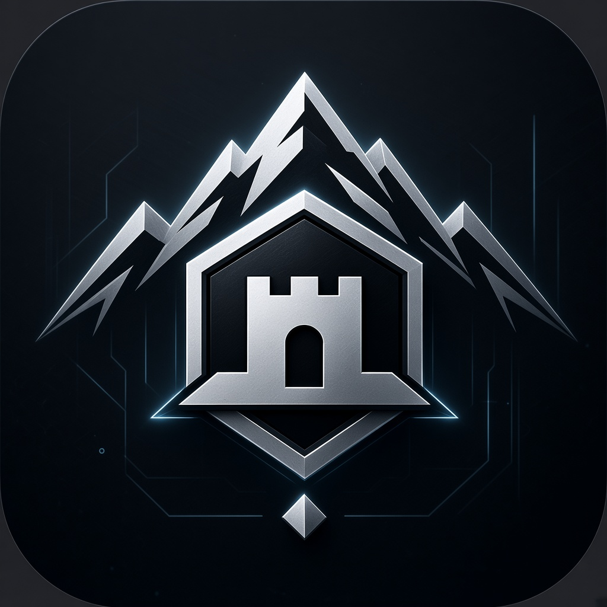

For solopreneurs & builders
Make AI your own.
Explore models, bring your own data, and build a fine-tuning workflow around your ideas. Use a guided interface, with room for more technical control as your needs grow.
Explore the platformYour model. Your environment. Always evolving.
From the first fine-tune to what comes next. Explore, train, evaluate, and deploy your models in one platform—then keep improving them as your business evolves.
For independent builders and enterprise teams.

The capabilities of ModelForge Studio.
The next chapter in Linnake.
Model exploration, dataset preparation, fine-tuning, evaluation, and deployment—brought together with continuous model improvement.
One connected platform
Start with a model. Make it your own. Take it into the world. Keep building on what works.
Explore & prepare
Compare model architectures and sizes. Prepare your datasets with deduplication, tokenization, and validation splits before training begins.
Fine-tune
Shape model behavior around your tasks and data. Follow training progress and manage checkpoints from a connected workspace.
Evaluate & deploy
Move from training to deployment with evaluation in the workflow. Model, export, and hardware compatibility determine the available deployment path.
Continuous fine-tuning
Linnake extends the initial model workflow into ongoing improvement. Bring new data and changing requirements into the next fine-tuning cycle.
Update cadence and deployment controls are defined around your use case.
ModelForge’s capabilities are being brought into Linnake. Talk with us about current availability and your deployment requirements.
Beyond the first fine-tune
Your products change. Your processes improve. Your model should have a path to evolve with them.
Understand continuous fine-tuningLinnake connects initial model creation with ongoing fine-tuning, so the work you put into your AI can continue to grow in value.
Use updated examples, revised workflows, and domain-specific data to inform the next training cycle.
Evaluate new versions against the tasks that matter to you. More training alone is not proof of a better model.
Plan model updates around your operating needs, with evaluation and version management as part of the process.
Linnake for enterprise
Customizable, fine-tunable LLMs for compatible employee desktops and laptops. A local AI experience, shaped around your organization.
A model for your work
Turn an approved process into a clear first draft.
Illustrative workspace. Device and model compatibility required.
Bring local AI into your organization through a tailored enterprise agreement. Define the model customization, device rollout, deployment approach, and support your team needs.
A machine that can run a model may need more resources to fine-tune it. Memory, GPU capability, model size, and training method determine what runs locally and what needs additional compute. We’ll scope those requirements with your team.
Start where you are
Whether you’re building independently or planning an organization-wide rollout, start with the work you need your model to do.
For solopreneurs & builders
Explore models, bring your own data, and build a fine-tuning workflow around your ideas. Use a guided interface, with room for more technical control as your needs grow.
Explore the platformFor organizations
Plan customized models and local AI for your teams, supported by an enterprise agreement built around your deployment scope and operating requirements.
Why Linnake?
Linnake is a Finnish word for a fort or stronghold. It can also describe a place where an idea holds firm.
For us, the name represents a lasting foundation for your AI: models shaped around your expertise, running in the environment you choose, and improving as your needs evolve.
Explore the Finnish meaning (Sanakirja.org, opens in a new tab)A little more clarity
Have a specific model or deployment in mind?
Linnake is the unified platform going forward. ModelForge Studio’s model exploration, dataset preparation, fine-tuning, evaluation, and deployment capabilities are being incorporated into Linnake, alongside continuous fine-tuning. The direction is one application for the full lifecycle.
It means revisiting and improving a model with new training data as needs change, rather than treating the initial fine-tune as the end of the process. It does not mean every conversation automatically retrains your model or every trained version is automatically deployed. Cadence and deployment controls should be defined for your use case.
Local AI is part of Linnake’s offering for compatible machines and models. Suitability depends on available memory, GPU capability, model size, quantization, and workload. Fine-tuning can require substantially more compute than running an already-trained model. Contact us to discuss your devices and requirements.
Yes. Enterprise discussions can cover fine-tunable models tailored to your domain and workflows, local deployment on compatible employee machines, the rollout scope, and support requirements. Licensing, service levels, security requirements, and commercial terms are established in your agreement.
The ModelForge capabilities being brought into Linnake include guided visual workflows for exploring, fine-tuning, and deploying models, alongside advanced notebook and CLI workflows for technical users. We can help identify the right starting point for your experience and use case.
Local inference means the model runs on the device. Where training data, logs, updates, and integrations are processed depends on the deployment configuration. For enterprise use, data handling and infrastructure boundaries should be explicitly defined in the deployment plan and agreement.
Contact the team to discuss your use case, current product availability, compatible infrastructure, and pricing. Enterprise agreements are scoped individually. We are not publishing fixed plans or launch dates on this site.
Build for what comes next
Let’s talk about your model, your environment,
and where you want to go.